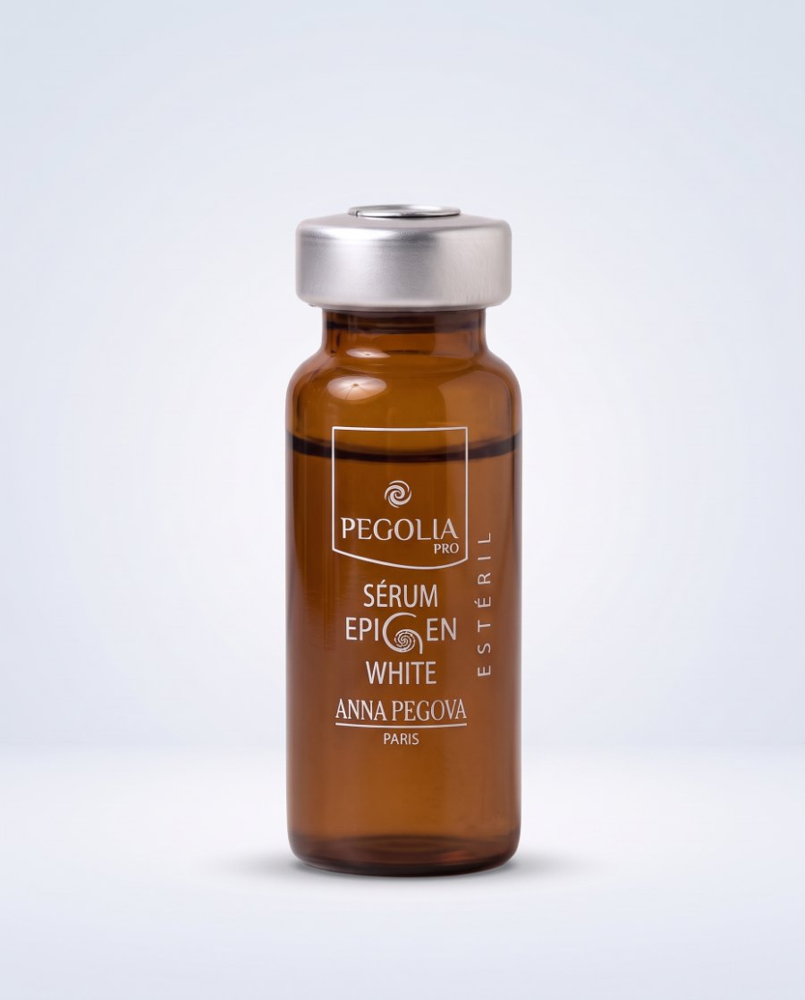
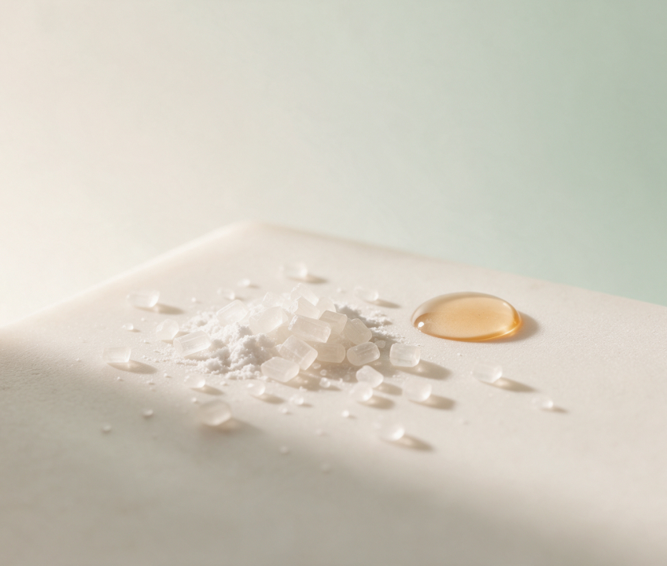
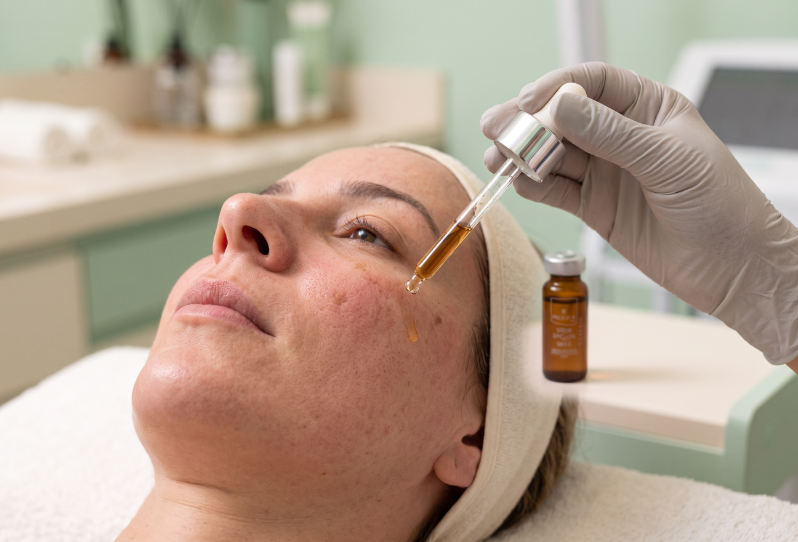

DRUG DELIVERY · AMPOLA ESTÉRIL
Sérum Epigen White
Clareia manchas escuras de forma contínua: melasmas, lentigos senis, olheiras, hormonais e fotoenvelhecimento.
Apresentação: Caixa com 10 ampolas de uso externo e único - 2ml cada.
Falar no WhatsAppPOR DENTRO DA FÓRMULA
Composição e função.

Ácido Tranexâmico
Clareia manchas escuras de forma contínua, sem o efeito rebote.
Alcaçuz
Inibe a formação de melanina pós-inflamatória.
Alfa-arbutin e Uva-ursi
Clareamento cutâneo sem efeito tóxico ou fotossensibilização.
Ativos
Acido Tranexâmico, Hexylresorcinol, Acido Fítico, Ácidos Graxos, TGP-2, D-Pantenol (pró-vitamina B5), Alfa-arbutin, EPS Bright, Uva-ursi, Extrato de Raiz de Glycyrrhiza Glabra (licorice/alcaçuz), Niacinamida, Portulaca Extract, Silicium Organico, PCA-na, Extrato de Magnólia Officinalis, Extrato de Folha Amora Negra.
MECANISMO
Como age.

Clareia manchas escuras de forma contínua: melasmas, lentigos senis, olheiras, hormonais e fotoenvelhecimento. Clareamento cutâneo sem efeito tóxico, fotossensibilização e efeito comedogênico. Reduz o tamanho e o número de manchas e evita o famoso “efeito rebote”. Inibe a formação de melanina pós inflamatória provocada por procedimentos dermatológicos. Clareia manchas decorrentes de processos inflamatórios (acne inflamada, cicatrizes, trauma, pós-depilatórias, por aquecimento). Reduz mediadores inflamatórios ativados pelo exposoma (ação epigenética) que são considerados fatores pró-inflamatórios conhecidos por ativar a síntese de melanina e a hiperpigmentação da pele. Ação reepitelizante, estimula a proliferação celular e auxilia na reparação de tecidos lesionados, promovendo a queratinização normal da derme e sua cicatrização. Controla a produção de sebo e possui ação antioxidante, reduzindo o estresse oxidativo. Melhora a ancoragem da derme com a epiderme, reestruturando a estrutura dérmica que se perde com o passar dos anos.
ESTUDOS E MATERIAIS
Estudo de caso para download.

Sérum Epigen White
Clareia manchas escuras de forma contínua: melasmas, lentigos senis, olheiras, hormonais e fotoenvelhecimento.
Falar no WhatsAppAtendimento direto com a equipe Anna Pegova.